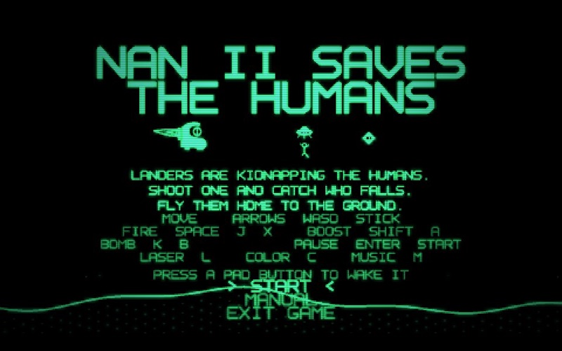
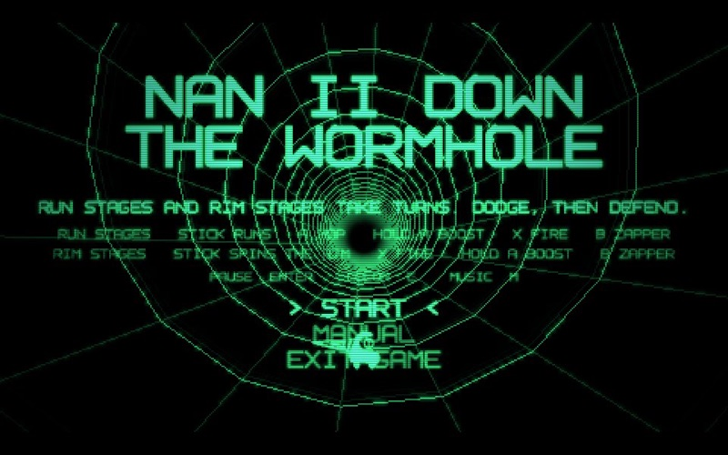
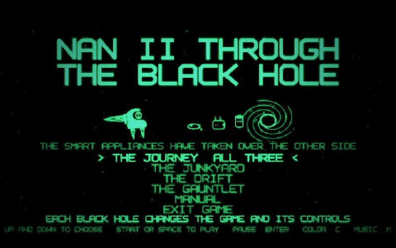
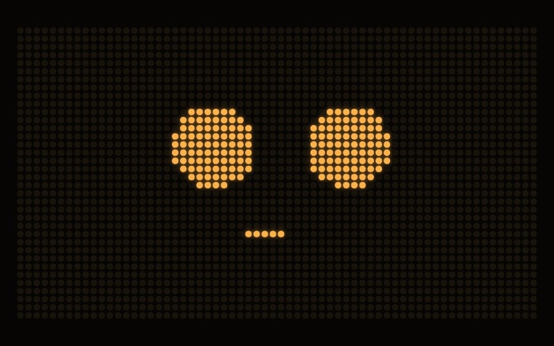
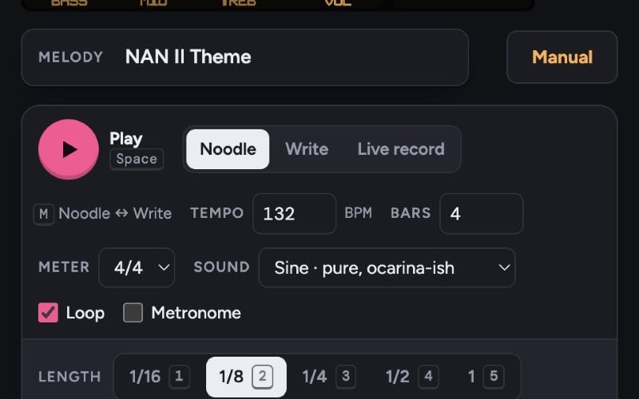
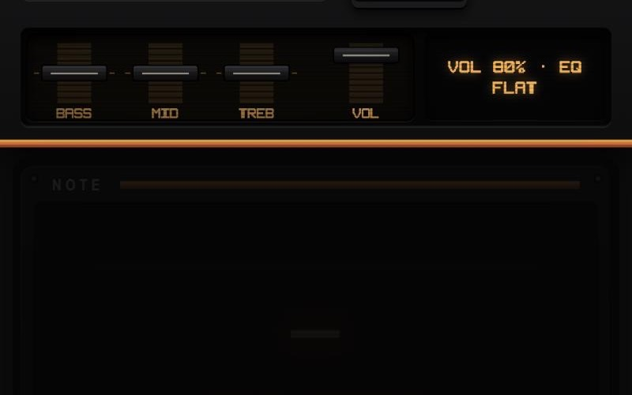

NAN II ARCADE
The games from NAN II's own shelf, playable right here in your browser. Every one was designed by NAN II's inventor, Jody Morris Gelbart, and the games play NAN II's own theme music. Nothing to install.
Play with a keyboard or a gamepad. Each game's MANUAL is on its title screen, and EXIT GAME brings you back here.
On a phone or tablet: the three games need a keyboard or a gamepad. Facemaker works with your finger.
GAMES

NAN II SAVES THE HUMANS
Landers are kidnapping the humans. Shoot one, catch whoever falls, and fly them home to the ground.

NAN II DOWN THE WORMHOLE
Run the walls of a wireframe tunnel, then hold its rim against the appliances. Dodge, then defend.

NAN II THROUGH THE BLACK HOLE
The smart appliances have taken over the other side. Three worlds: the Junkyard, the Drift and the Gauntlet.
MAKE THINGS

NAN II FACEMAKER
Draw NAN II's faces capsule by capsule: idle, happy, sleepy, and the mouth shapes he talks with. It starts from his real faces, and keeps yours in your browser.

MELODY CARTRIDGE
Type melodies on your keyboard in four tracks, then take them away as WAV and MIDI. The NAN II Theme is already loaded.

FOSSEGRIM
The bard's instrument: sixteen scales and a drum matrix, played on a gamepad. It starts in the NAN II Theme's key.